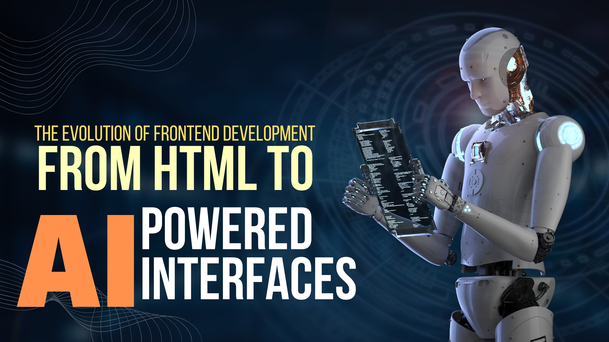

Frontend development has transformed from simple static pages into a complex, user-centered discipline that blends design, engineering, and intelligent systems. This post traces that journey — the milestones, the technologies, and what the rise of AI means for the future of building user interfaces.

The web began as a collection of documents. HTML provided structure; browsers rendered content. In the early days, frontend work meant writing semantic HTML and tiny amounts of inline styling. Web pages were largely static, and interactivity was minimal.
The introduction of CSS separated presentation from structure, enabling visual design at scale. JavaScript added client-side interactivity, allowing pages to respond to user input without round trips to the server. Together, these two technologies turned web pages into dynamic experiences.
As the web grew more interactive, developers embraced libraries like jQuery to simplify DOM manipulation. Soon after, component-driven frameworks emerged — Angular, React, and Vue — promoting modular architectures and state management patterns. These frameworks changed how UIs were designed, tested, and reasoned about.
The SPA pattern enabled app-like experiences in the browser. At the same time, responsive design and the mobile-first approach became standard practice as usage shifted to phones and tablets. Progressive Web Apps (PWAs) added offline support, installability, and advanced caching — blurring the line between web and native.
With user expectations rising, performance optimization became essential: bundling, code-splitting, tree-shaking, image optimization, and lazy loading are now standard techniques. Accessibility (a11y) also moved front and center. Modern frontend developers are responsible not only for how things look, but for how they perform and how inclusive they are.
New architectures like Jamstack prioritize pre-rendering and CDN delivery for speed and security. Server-Side Rendering (SSR) and hybrid rendering models (SSG + SSR) improved indexability and load time. WebAssembly opened the door to high-performance modules in the browser, enabling use-cases once reserved for native apps.
Tooling matured rapidly: modern bundlers and dev servers (Vite, Webpack), typed languages (TypeScript), linters, formatters, testing frameworks, and robust CI/CD pipelines streamline delivery. Design systems and component libraries provide consistency across products and speed up UI development.
AI is the latest force reshaping frontend development in three major ways:
Opportunities: Faster prototyping, improved accessibility through automated audits and fixes, and more relevant user experiences through personalization.
Challenges: Ethical concerns (privacy, bias), maintainability of AI-generated code, and a need for new testing paradigms. As AI suggests or generates code, developers must ensure correctness, security, and fairness.
The future of frontend development is collaborative and adaptive. Developers will leverage AI to eliminate repetitive tasks, accelerate experimentation, and create interfaces that learn from users. But the core discipline remains the same: crafting usable, fast, and accessible experiences. The best frontend engineers will combine technical skill with critical thinking and design empathy.
From basic HTML documents to AI-powered, context-aware interfaces, frontend development has come a long way. The next era blends creativity, engineering, and intelligence — offering exciting possibilities and responsibilities. Stay curious, keep learning, and focus on building user-first experiences.
Want this converted into a ready-to-publish HTML block for your site or a matching CSS starter file?